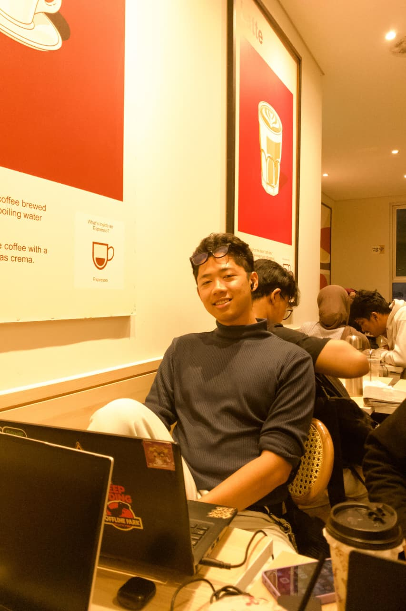
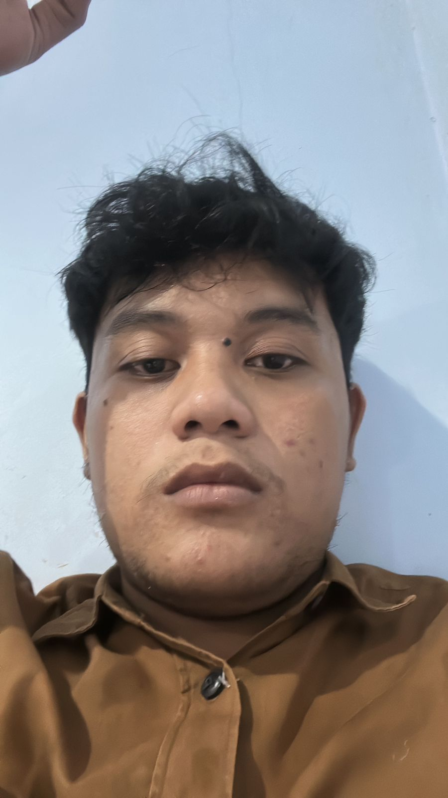

Mata Kuliah : Islam & Saintek
Tema : Perkembangan dan Penggunaan Teknologi IoT dalam Mempermudah Ibadah Sholat
Website ini dibuat sebagai media edukasi mengenai integrasi teknologi modern dengan nilai-nilai Islam dalam mendukung aktivitas ibadah.

NIM: 102230019
Kelas: IM23B

NIM: 102230014
Kelas: IM23B
NIM: 102230032
Kelas: IM23B
NIM: 102230107
Kelas: IM23B
Integrasi teknologi modern dengan nilai-nilai Islam dalam membantu umat menjalankan ibadah secara lebih efektif, tepat waktu, dan nyaman.
Dengan kemajuan perangkat pintar, sistem IoT sekarang dapat mendukung umat dalam menunaikan kewajiban agama. Dari pengingat waktu sholat yang akurat, informasi arah kiblat, hingga pemantauan kondisi masjid, teknologi ini dirancang untuk melengkapi dan mempermudah pelaksanaan ibadah tanpa mengorbankan keharmonisan nilai agama.
Pendekatan ini memperkuat nilai Islam yang menekankan kemudahan, kebaikan, dan tanggung jawab. Perangkat yang selaras dengan syariat membantu jamaah tetap fokus pada niat dan kekhusyuan saat berdoa, sekaligus menghadirkan dukungan praktis bagi kehidupan sehari-hari.
"Allah menghendaki kemudahan bagimu dan tidak menghendaki kesulitan bagimu."
Penjelasan: Ayat ini menegaskan bahwa syariat Islam adalah untuk memberikan kemudahan dan menjauhkan umat dari beban yang berlebihan. Implementasi IoT dalam konteks ibadah sholat membantu mewujudkan prinsip ini melalui solusi pengingat waktu, informasi arah kiblat, dan fasilitas cerdas yang mendukung konsistensi beribadah.
“Permudahlah dan jangan mempersulit, berilah kabar gembira dan jangan membuat orang lari.”
Penjelasan: Hadis shahih ini mendorong umat Islam untuk memilih jalan kemudahan dalam menjalankan ibadah. Teknologi IoT yang dirancang untuk membantu ibadah sholat sejalan dengan ajaran ini karena menyediakan dukungan praktis tanpa menambahkan kesulitan atau beban.
Internet of Things (IoT) adalah sebuah ekosistem perangkat fisik yang saling terhubung melalui jaringan internet untuk mengumpulkan, mengirim, dan menerima data. Secara sederhana, IoT memungkinkan benda sehari-hari menjadi "pintar" dengan kemampuan komunikasi dan otomatisasi.
Sistem IoT umumnya tersusun dari beberapa komponen dasar yang bekerja bersama: perangkat sensor/aktuator, konektivitas (Wi‑Fi, LoRa, atau jaringan seluler), platform pemrosesan data (cloud atau server lokal), dan antarmuka pengguna untuk pemantauan dan pengaturan.
Dalam lingkungan masjid dan ruang ibadah, IoT menawarkan solusi praktis yang meningkatkan kenyamanan, ketertiban, dan keteraturan pelaksanaan sholat. Contohnya termasuk pengingat waktu sholat otomatis, sistem adzan terjadwal, pemantauan kualitas udara dan suhu ruangan, serta sistem pencahayaan dan ventilasi yang menyesuaikan kondisi.
Secara keseluruhan, IoT bukan hanya soal perangkat yang terhubung, tetapi tentang menciptakan lingkungan yang responsif dan membantu umat fokus pada ibadah dengan gangguan teknis yang lebih sedikit.
Teknologi Internet of Things (IoT) terus mengalami perkembangan pesat, didorong oleh kemajuan jaringan nirkabel, kapasitas komputasi awan, dan kemampuan kecerdasan buatan. Perubahan ini memungkinkan perangkat berkomunikasi satu sama lain secara otomatis dan memberikan data yang lebih akurat untuk pengambilan keputusan.
Dalam konteks ibadah, IoT kini tidak hanya menjadi pengingat waktu sholat, tetapi juga menjadi fondasi sistem masjid pintar yang membantu menciptakan lingkungan yang lebih nyaman dan aman. Sistem ini mengintegrasikan jadwal sholat digital, speaker adzan otomatis, serta kontrol pencahayaan dan ventilasi sesuai kondisi jamaah.
Penerapan teknologi ini memungkinkan pengelolaan fasilitas ibadah yang lebih efisien, dengan pemantauan kondisi udara, suhu, dan keamanan secara real time. Dengan pendekatan yang lebih cerdas, umat dapat fokus beribadah tanpa harus terganggu oleh masalah teknis atau operasional.
Pemanfaatan Internet of Things (IoT) dalam kegiatan ibadah membawa perubahan positif yang nyata bagi pengelolaan masjid. Dengan sistem terintegrasi, masjid menjadi lebih responsif terhadap kebutuhan jamaah, sehingga pengalaman beribadah terasa lebih nyaman, aman, dan tertata.
Implementasi teknologi ini tidak hanya meliputi pengingat waktu sholat, tetapi juga pengaturan lingkungan ibadah, monitoring fasilitas, dan dukungan operasional yang lebih baik. Pendekatan yang lebih profesional dan terencana membantu pengurus masjid fokus pada pelayanan spiritual, sementara aspek teknis dipantau secara otomatis.
Aplikasi pengingat waktu sholat, GPS kiblat, dan informasi ibadah.
Terhubung dengan GPS dan server waktu sholat
Perangkat pintar pendamping ibadah personal.
Wearable IoT pengingat ibadah
Masjid pintar dengan sensor dan otomatisasi.
Kontrol lampu, AC, dan keamanan otomatis
Speaker otomatis berdasarkan jadwal sholat.
Cloud mengirim jadwal adzan secara otomatis
Struktur website modern
Desain dark elegant
Push and pull repository
Interaksi dan navigasi
Menunggu lokasi...
Belum aktif